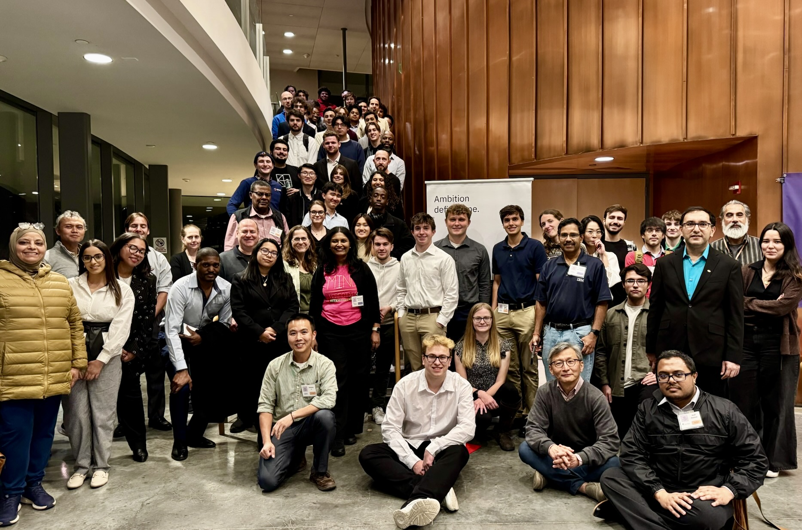
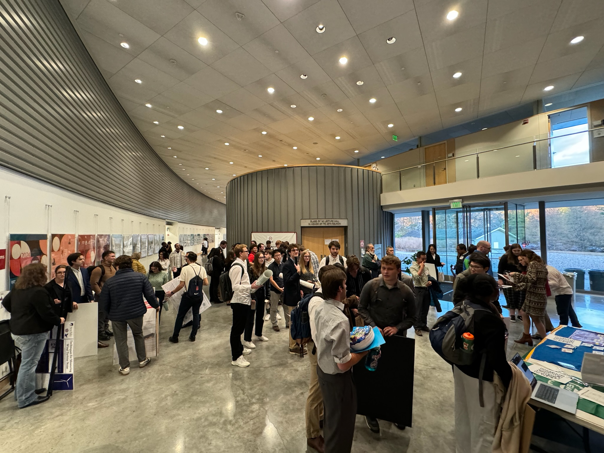

Taheemuddin Ahmed, Wafi Danesh · SUNY New Paltz
Mid-Hudson Valley TechMeet 2024
Innovate. Connect. Inspire.
1st Annual TechMeet · 2024
Friday, November 8, 2024
Bard College · Annandale-on-Hudson, New York
Innovate. Connect. Inspire.
Bard College · Annandale-on-Hudson, New York
Event Summary Event Gallery Featured Speaker Winning Posters Submitted Posters Steering Committee
The inaugural Mid-Hudson Valley TechMeet was held on November 8, 2024, at Bard College. More than 80 students, technology professionals, and academic leaders attended the event.
Supported by Bard, Marist, SUNY New Paltz, Vassar, SWE, IEEE, ASME, and IBM, the event featured 35 student poster presentations judged by 20 industry experts. Projects covered AI, cybersecurity, engineering, and general science, creating opportunities for feedback, connection, and knowledge exchange.


Chris Berry, a Distinguished Engineer from IBM, presented “Launching a Tech Career: Skills, Opportunities, and the Future of AI in STEM.”
The talk covered practical steps for entering the technology field, the skills needed for growth, and how artificial intelligence is reshaping the industry. Chris also offered a forward-looking perspective on AI over the following five years.
Taheemuddin Ahmed, Wafi Danesh · SUNY New Paltz
Isabelle Borgstedt, Isaac Rudnick, Ken Kabeya · Vassar College
Brian Abbott · SUNY New Paltz
Josip Huzovic, Eric Guzman, Daniel Garcia, Casimer DeCusatis, Melissa Chodziutko · Marist College
Emily Herbert · SUNY New Paltz
Matthew Selvaggio · SUNY New Paltz
Salih Awouda · Vassar College
JWilliam Chang, Freddy Coronel, Luke Collins, Mariam Morsy, Sage Saccomanno, Craig Anderson, Swapan Jain · Bard College
All poster projects submitted for the inaugural 2024 Mid-Hudson Valley TechMeet.
| Category | Title | Institution | Authors |
|---|---|---|---|
| AI/ML | MarketLens: AI Model for Learning and Predicting Financial Market Shifts | Volodymyr Didur | Bard College |
| AI/ML | CareConnect: AI App for Conversational Support and Assistance | Volodymyr Didur | Bard College |
| AI/ML | AI Explainability Techniques for Real-World Dynamic Tone Analysis | Christian Sarmiento; Luke Pecovic, Prof. Brian Gormanly | Marist College |
| AI/ML | LUROX D AI Prosthetic | Taheemuddin Ahmed; Wafi Danesh | SUNY New Paltz |
| AI/ML | Jeopardizing Language | Nicolas DeMilio; Dr. Ashley Suchy, Mostafa Ibrahim, Brian Abbott | SUNY New Paltz |
| AI/ML | Pyroxene: A Graph Based Programming Language Leveraging the LLVM | Daniel Gunther | SUNY New Paltz |
| AI/ML | Programming a Humanoid Robot | Isabelle Borgstedt; Isaac Rudnick, Ken Kabeya | Vassar College |
| AI/ML | Opening Minds with Conversational Large Language Models | Ian Ho; Jacqueline Adelmann ’26, Niranjan Baskaran, Prof. Joshua de Leeuw; Cognitive Science, Prof. Stephen Flusberg; Cognitive Science | Vassar College |
| Cybersecurity & Cloud | Dark Web Scraping | Connor Eddy; Giuliano Piscitani | Marist College |
| Cybersecurity & Cloud | Adaptive multi-stage cyberattacks using Bash Bunny | Josip Huzovic; Eric Guzman, Daniel Garcia, Casimer DeCusatis, Melissa Chodziutko | Marist College |
| Cybersecurity & Cloud | Mac Malware Abstract | Julianna Russo; Frederick Berberich, Daniella Boulos, Christopher Driselle | Marist College |
| Cybersecurity & Cloud | Quantum Computer Hybrid Cloud SOC Analytics As A Service | Justin Sterlacci; Evan Spillane, Kevin Gartner, Casimer DeCusatis | Marist College |
| Cybersecurity & Cloud | Network Time Security Encryption of Precision Time Protocol | Luciano Mattoli; Cassidy Heulings, Clay Kaiser, Casimer DeCusatis | Marist College |
| Cybersecurity & Cloud | ECRL As A Service - Cloud in a Rack | Ryan Rosenkranse; Frederick Berberich, Chris Algozzine, Christy Schroeder | Marist College |
| Cybersecurity & Cloud | Threat-Based Vulnerability Prioritization Through Prompt Engineering | Tristan Barboni; Jankarlo Villanueva, Hannah Gidos | Marist College |
| Cybersecurity & Cloud | Security Profiles for Linux with KVM Hypervisors | Zachary VanderVelden; Nicholas Philips, Nathaniel Desaney, Casimer DeCusatis, Fernando Pizzano | Marist College |
| Cybersecurity & Cloud | NetScanLogger | Brian Abbott | SUNY New Paltz |
| Engineering & Technology | Self-Balancing Planar System: Exploring PID, Pole Placement, and LQR Controllers | Yiwen Jia | SUNY New Paltz |
| Engineering & Technology | Exploring Tensile Weakness of 3D-Printed Structures | Bianca Bermudez; Aileen Pastrana, Shaima Herzallah, Ping-Chuan Wang | SUNY New Paltz |
| Engineering & Technology | Thermal and Electrical Performance Optimization of Microstrip Transmission Lines for High-Power RF Applications | Julia Bossonis; Dr. Ping-Chuan Wang, Dr. Mohammad Zunoubi, Michael Taussig | SUNY New Paltz |
| Engineering & Technology | Generation of Polarization Entangled Photons from Silicon Microring Resonators | Emily Herbert; Alexander Miloshevsky, Hsuan-Hao Lu | SUNY New Paltz |
| Engineering & Technology | Applying Genetic Algorithms to Diffusiophoretic Microplastic Water Filtering | Benjamin Jon; Michael DeFreitas | SUNY New Paltz |
| Engineering & Technology | Techniques for measuring wind turbine noise | Casey Maracek; Heather Lai | SUNY New Paltz |
| Engineering & Technology | Numerical Computations of Advanced Water-Cooled Cold Plates for Thermal Management of Microchips with Hotspots | Matthew Selvaggio | SUNY New Paltz |
| Engineering & Technology | Off-Grid Lighting Product | Shelly Yousoufoy; Joshua Vital | SUNY New Paltz |
| Engineering & Technology | HLD Quick Start Wizard | Griffin Carey; Kevin Hayden | Marist College |
| General Science & Math | Theorems on Equational Unification Problems in the Theory of Ordinary and Involutory Quandles: A Reduction to Matching and Structural Criteria for Solvability | Volodymyr Didur, Tamana Sultani, Renata Karpenko | Bard College |
| General Science & Math | Unification Problem for Idempotent, Right Quasi Groups Is Decidable | Fatima Rahimi; Nyla, Lawrence | Bard College |
| General Science & Math | Halide Exchange in Pb-Free CsMnX3 Perovskites with Trimethylsilyl Halide Reagents | Sasha Fraser; Timofey Semenov | Bard College |
| General Science & Math | Inhibition of DHFR enzyme by Ruthenium Metal Complexes | William Chang; Freddy Coronel, Luke Collins, Mariam Morsy, Sage Saccomanno, Craig Anderson, Swapan Jain | Bard College |
| General Science & Math | The Leo Project: Cybersecurity for Clean Water Systems in Africa | Ryan Eager; Jackson Schlosser, Anthony Scappaticci, Nicholas Suchy, Nico Cornape-Martinez, Casimer DeCusatis, Carolyn Sher-DeCusatis, Esther Wekesa | Marist College |
| General Science & Math | Modeling CaCO₃ Accretion on a Working Electrode via Controlled Electrochemistry | Kyle Kravitz; Rachmadian Wulandana, Julio Aguirre | SUNY New Paltz |
| General Science & Math | Data Analysis of Lakes | Cyrus Mika; Dr. David C. Richardson, Christopher Jamieson, Waheed Saroya | SUNY New Paltz |
| General Science & Math | Napari Plugin for Analyzing Fibers of Biological Micrographs | Filip Sakellariou; Irene Georgakoudi, Yuhang Fu | Vassar College |
| General Science & Math | Biochemical Characterization of Spider Glue Droplet | Salih Awouda; Candido Diaz, John Long | Vassar College |
The inaugural event established a foundation for future technology engagement and innovation across the Mid-Hudson Valley. We thank all participating students, judges, speakers, volunteers, institutions, and sponsors who contributed to its success.